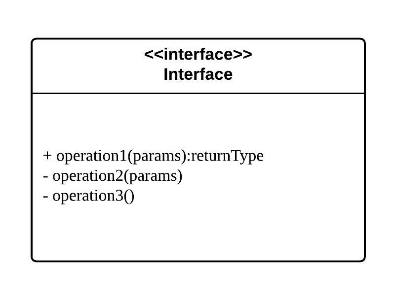
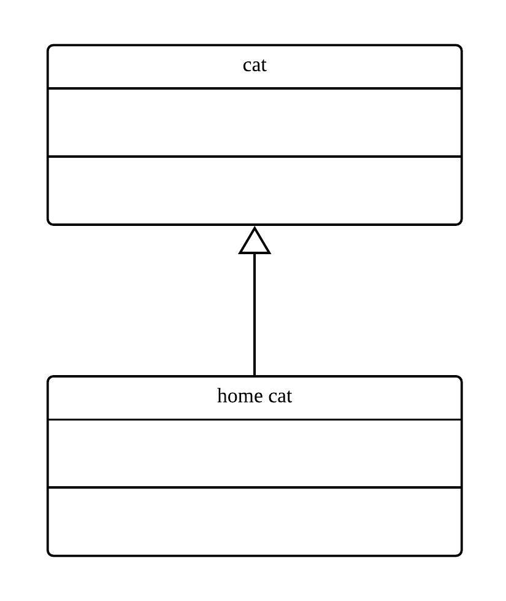
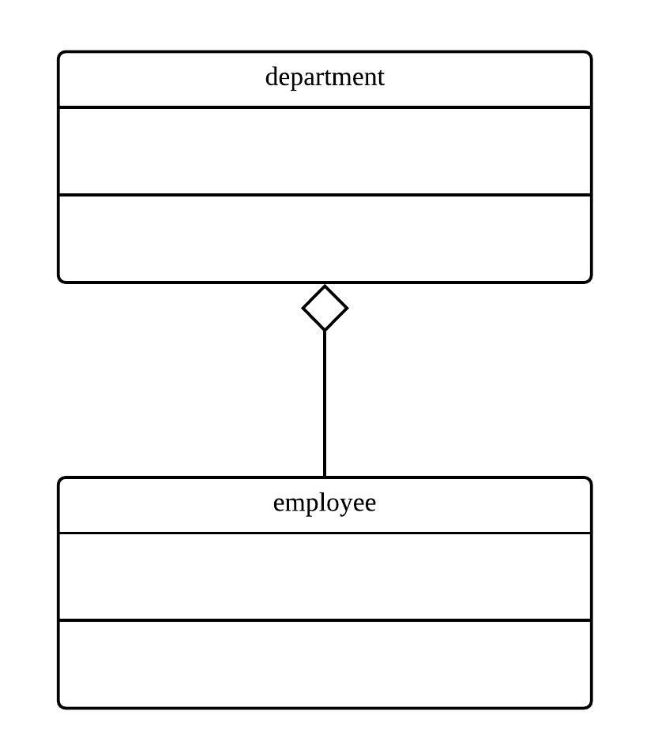
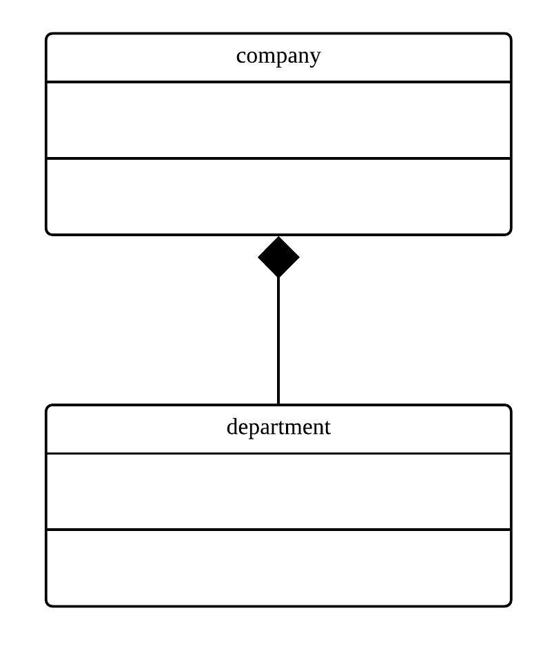
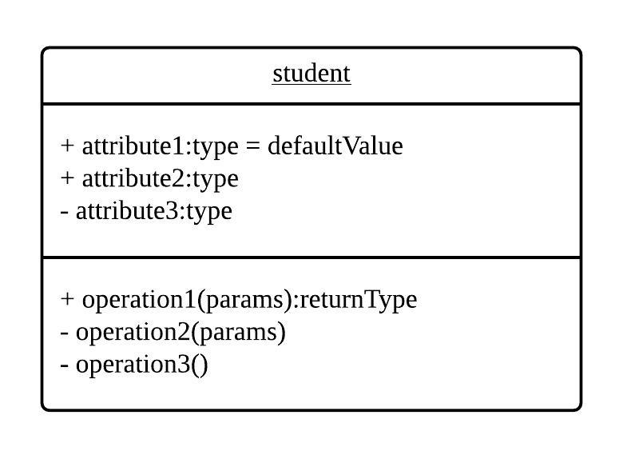
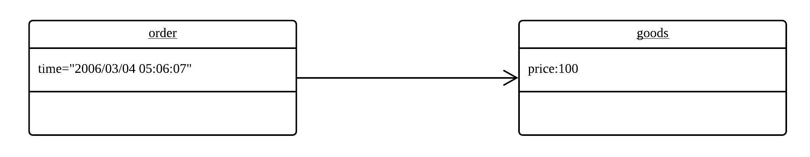

UML 五分钟入门
昨晚临下班时，有位同事说自己想做一套 XXX 系统。于是我们在会议室讨论了近一个小时，将此系统的执行流程、接口定义、数据格式等进行了设计，使用的工具就是 UML 图。这里简单做一个温故知新。 UML（Unified Modeling Language）全称为统一建模语言，是用来对各种软件系统进行可视化建模的语言，由 O…
UML 五分钟入门
昨晚临下班时，有位同事说自己想做一套 XXX 系统。于是我们在会议室讨论了近一个小时，将此系统的执行流程、接口定义、数据格式等进行了设计，使用的工具就是 UML 图。这里简单做一个温故知新。
UML（Unified Modeling Language）全称为统一建模语言，是用来对各种软件系统进行可视化建模的语言，由 OMG（Object Management Group，对象管理组织）发布于 1997 年。作为一种与编程语言无关的语言，UML 能够在项目之初就对整个系统绘制蓝图，以便于人们后期能够按部就班地一步步完成整个项目周期。
UML 标准包括类图、对象图、组件图、部署图、用例图、交互图、状态图、活动图等。这里我们只关注类图和对象图。
UML 类图
说到类，自然离不开接口、对象和面向对象，离不开其三大特性：抽象、继承和多态。UML 通过定义「事物」和它们之间的「关系」，来表示一个系统中面向对象设计的概况。
事物是实体抽象化的结果，是 UML 构建块最重要的组成部分。在类图中，存在「类」和「接口」事物。类是具有相同属性、方法、关系和语义的对象的集合：

其中 + 表示该成员或方法的属性为 publish，- 表示属性为 private，同样的，还有 # 表示 protected；
接口也叫做抽象类，是指类或组件所提供的方法，描述了类或组件对外可见的动作：

「关系」描述元素之间如何彼此关联，类之间有如下关系：
实现关系
实现关系用一条带空心箭头的虚线表示；比如「猫」这个类就实现了「动物」这个接口：

在代码中表现为「猫」继承了「动物」这个抽象类。
泛化关系
泛化关系也表示继承，但跟实现关系不同的是，泛化关系继承的不是抽象类，而是另一个非抽象类。用一条带空心箭头的实线表示，比如「家猫」继承「猫」：

聚合关系
聚合关系表示对象实体之间的关联，表示由部分构成整体的语义，例如一个部门由多个员工组成。但与组合关系不同的是，整体和部分不是强依赖的，即使整体不存在了，部分仍然存在。用一条带空心菱形箭头的实线表示：

组合关系
组合关系表示强依赖的特殊聚合关系，如果整体不存在了，部分也就不存在。如公司不存在了，部门也就不存在了。组合关系使用一条带实心菱形箭头表示：

UML对象图
UML 对象图显示某个时刻对象和对象之间的关系。一个 UML 对象图可以看成一个类图的特殊用例，或者系统内对象在某一时刻的快照。所以对象图几乎使用和类图完全相同的标识，并且只在系统某一段时间内存在。以下是一个对象图的例子：

可以看出，对象图除了名字含有下划线外，其余和类图完全一样。
对象之间的关系有两种：
关联关系
关联关系描述不同对象之间的结构关系，通常与运行状态无关，而是根据常识决定的，比如「学生」类就依赖于「学校」类，用一根直线表示，如果强调方向，也可以带上箭头：

依赖关系
依赖关系用一条带箭头的虚线表示，表示一个对象会在运行期用到另一个对象，比如一个订单对象就依赖于一个商品对象：

运行期间产生，并且其状态也会不断改变。